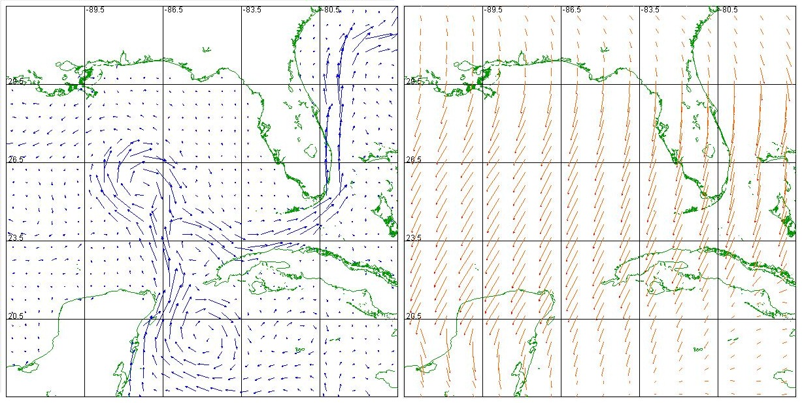

The purpose of this project is to develop an accurate drift simulator that can be used to find the most probable location of an object lost at sea given the most probable last known position of the object, the time elapsed, and the specification of the object.
This can be achieved by calculating the effects that ocean currents and wind has on the object when it’s adrift at sea.
The data surrounding the currents and wind will be selected for a period of time that we wish to simulate.
The current and wind data will each include a direction and magnitude from corresponding latitudes and longitudes.
This data is used to do vector calculations to predict the path of the object.
The application input will be the longitude and latitude of the most probable last known position of the object, the time elapsed, direction of travel, and vehicle type.
The software will refer to a database with the environmental data needed by the simulator, which may be provided by the user for a new simulation or referenced if the data for the case was already compiled.
The output of the software will be a graphical representation of the most probable location of the drifted object.
Functionality
 This part of the application handles input from the user.
Objects don't need to have an intended path; the intended path is a straight path that the object was meant to take.
It’s helpful when predicting the location of a ship which could have lost power along that path.
The next input section is last known time and location of the object which is where the application will start simulating its drift.
The user would select the object type; the different objects drift differently based on their characteristics.
There are four options; the Small Object (Person), Small Unpowered (Raft), Medium Sailboat, or Float Buoy.
The wind and ocean current data affect these objects differently, for example sailboats have a larger wind drag than a person would.
Finally the user can input a speed to be used with a ship on an intended path.
This part of the application handles input from the user.
Objects don't need to have an intended path; the intended path is a straight path that the object was meant to take.
It’s helpful when predicting the location of a ship which could have lost power along that path.
The next input section is last known time and location of the object which is where the application will start simulating its drift.
The user would select the object type; the different objects drift differently based on their characteristics.
There are four options; the Small Object (Person), Small Unpowered (Raft), Medium Sailboat, or Float Buoy.
The wind and ocean current data affect these objects differently, for example sailboats have a larger wind drag than a person would.
Finally the user can input a speed to be used with a ship on an intended path.
 This side of the application displays the drift simulation of the object graphically showing the likely area of the object.
The map focuses in on the area that the user indicates with the input.
There are step buttons below the map to step through the simulation.
There is also a drop down with different time increments to step by like 15 minutes or by hours.
The text area next to the step buttons displays the current time that is being displayed on the map.
Next to that there is a reset button for the map.
To the right side of the map there are radio buttons which determine what is displayed on the map during the simulation.
The first two display the vector arrows for the ocean and wind data.
The third radio button displays the intended path of the object.
The following two are currently nonfunctional.
The probability area would display color coded areas which are more probable for the object.
And the search pattern would display the best path for searching for the object.
This side of the application displays the drift simulation of the object graphically showing the likely area of the object.
The map focuses in on the area that the user indicates with the input.
There are step buttons below the map to step through the simulation.
There is also a drop down with different time increments to step by like 15 minutes or by hours.
The text area next to the step buttons displays the current time that is being displayed on the map.
Next to that there is a reset button for the map.
To the right side of the map there are radio buttons which determine what is displayed on the map during the simulation.
The first two display the vector arrows for the ocean and wind data.
The third radio button displays the intended path of the object.
The following two are currently nonfunctional.
The probability area would display color coded areas which are more probable for the object.
And the search pattern would display the best path for searching for the object.
Team Project
UI by Natalie Shafer
Backend by Rachel Shafer